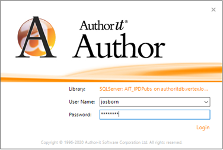
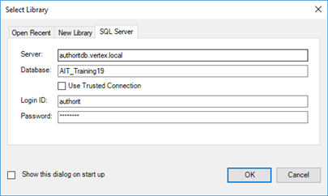

When you log on to Author-it, you enter your username and password. This is not to be confused with the username and password required for the SQL database connection. The Author tool uses the username and password that are personal to you. The SQL Server logon uses authorit for both the username and password.
Caution: Do NOT enter your personal username and password in the SQL Server logon fields or leave these fields blank. This could result in a registry corruption.
Use the following settings when logging on to Author-it Author:
Username: selected from the drop-down list
Password: your personal password

Use the following settings when connecting to the SQL Server database:
Login ID: authorit
Password: authorit

For more information about connecting to the different Author-it databases, refer to Database connection information in the KM Knowledge Base.